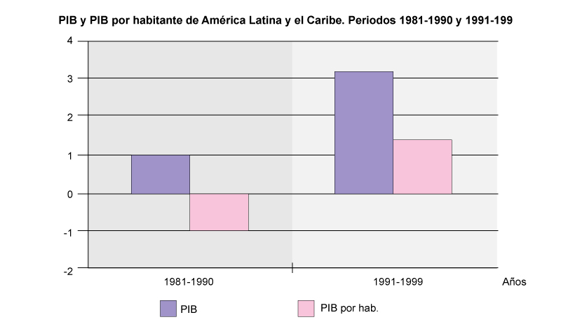
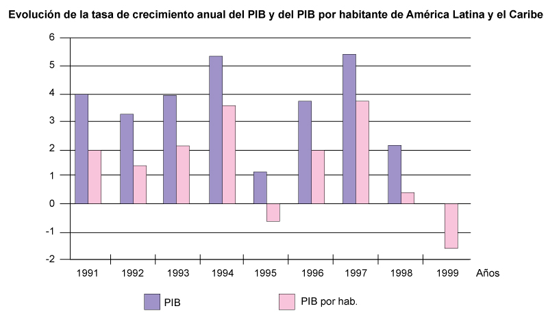

Conceptos Claves
Los países como las personas requieren crédito externo para financiar inversiones, para ello los países acuden a la banca internacional o a los organismos multilaterales de crédito como el Banco Mundial y el Fondo Monetario Internacional. Estas instituciones estudian las solicitudes y formulan recomendaciones de política económica para facilitar el desembolso del dinero. Buscan ante todo garantizar el pago de la deuda, sin que ello constituya un compromiso que resulte imposible de pagar.
Como no todas las economías son iguales en tamaño, un indicador válido es contabilizar el monto total de la deuda (pública y privada) de un país con la banca internacional, con respecto al total de su Producto Interno Bruto (PIB). Si el monto de la deuda supera el 30% del PIB, puede resultar problemático para el país acceder a nuevos créditos e incluso, pagar los que tiene asignados.
El Producto Interno Bruto (PIB) es el valor total de los bienes y servicios producidos por un país, en un periodo de tiempo determinado (un año), al precio del mercado de cada producto.
El Producto per cápita es un cálculo para determinar cuánto del Producto Interno Bruto le corresponde a cada habitante del país en promedio, por eso está en relación con la población del país. Cuando se habla de crecimiento económico de un país se espera que el incremento del PIB sea superior al crecimiento de la población, para que aumente el promedio.
¿Cómo varió el PIB y el Producto per cápita en América Latina a finales del siglo XX?
La gráfica muestra la dinámica del Producto Interno Bruto y el Producto per cápita en América Latina en dos periodos: entre 1981 y 1990, y entre 1991 y 2000. Se observa claramente que el crecimiento del PIB durante el primer periodo fue cercano al 1 %, una cifra realmente mínima. El Producto per cápìta obviamente tiene una reducción, debido a que la población creció, al tiempo que el PIB casi no creció.
En el segundo periodo se observa un aumento del PIB por encima del 3 % y un aumento del Producto per cápita por encima del 1%. Es decir, que el PIB creció más que la población en ese periodo.

Fuente: CEPAL.
La segunda gráfica muestra la evolución de la tasa de crecimiento del PIB anual en América Latina. Se puede concluir que el crecimiento del PIB de América Latina en el periodo 1991 y 1999 fue de crecimiento irregular, inestable, por lo cual las economías de la región no lograban generar un clima de confianza para las inversiones. En algunos años había crecimientos altos y en los años siguientes el crecimiento se frenó, como ocurrió en 1994-1995 y 1997-1998 y 1999.

Fuente: CEPAL.
Deuda externa y neoliberalismo
En el interactivo encontrarás un texto que sintetiza la problemática de la deuda externa y el neoliberalismo. Allí se describe el origen de la crisis de la deuda, las implicaciones sociales y económicas, y la manera como se llegó a aceptar los principios neoliberales para combatir la crisis.
Hay que recordar que hasta los años ochenta en América Latina buena parte de las empresas de servicios públicos eran estatales, la industria privada se beneficiaba de barreras tributarias para el ingreso de bienes extranjeros, los Estados latinoamericanos eran actores muy potentes en la dinámica económica y además se mantenían vigilantes sobre los precios de los bienes y servicios; así las cosas, las economías eran bastante sensibles a la actividad estatal.
Es importante que leas con atención el texto, consultes los significados de los conceptos desconocidos y realices la actividad propuesta, siempre contando con el apoyo de tu profesor así como de los recursos del portal.